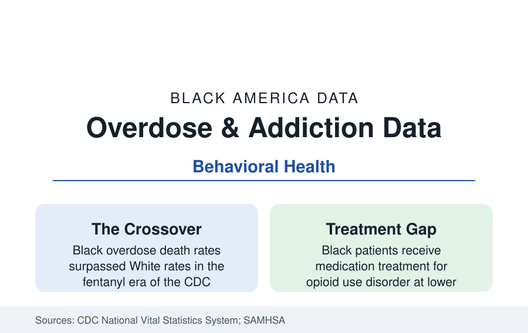

Black Public Health
Substance Use and Overdose in Black America: The Epidemic's Second Wave
Drug overdose deaths among Black Americans rose past White rates in the fentanyl era. The CDC mortality and treatment data.

The overdose epidemic's racial map inverted in the last decade. The prescription-opioid wave of the 2000s killed disproportionately in white, rural America; the fentanyl wave moved the epidemic's center into the cities, and by the early 2020s the CDC's mortality data recorded Black overdose death rates exceeding White rates for the first time — driven by synthetic opioids saturating the cocaine and counterfeit-pill supplies of the urban drug markets. This article reports the substance use and addiction data.
Use Rates Versus Death Rates: The Central Distinction
The survey data discipline the story's first premise: illicit drug use rates among Black adults run comparable to — for most substances, slightly below — White adults' in the SAMHSA national surveys, and alcohol use runs notably lower (Black adults abstain at the highest rates of any major group; alcohol use disorder rates follow lower). The deaths, however, concentrate by the supply's toxicity and the user's circumstances, not by use prevalence: fentanyl's presence in the cocaine supply (exposing users who do not identify as opioid users, without tolerance or naloxone awareness), the aging cohort effect (older Black users of long standing — the survivors of the 1980s–90s waves — overdosing at the epidemic's highest age-specific rates in the CDC data, their accumulated health damage compounding), and polysubstance patterns (the stimulant-opioid combinations dominating the toxicology). The mortality file's geography is the city profiles' map: the legacy districts' open-air markets, the Kensingtons and Skid Rows, and the treatment deserts between them.
Treatment: The Access Ledger
The treatment data describe a two-tier system. The medication treatments for opioid use disorder — methadone, buprenorphine, naltrexone — carry the strongest evidence in addiction medicine, and their distribution stratifies on every axis the claims data cut: buprenorphine prescribers concentrate in whiter, wealthier areas (the pharmacy and prescriber geography studies), methadone clinics (daily-attendance, heavily regulated) concentrate in Black and Latino urban neighborhoods (the siting politics of the zoning record), and Black patients entering treatment receive medication at lower rates than White patients in the TEDS and Medicaid analyses — with the stimulant-use disorders (cocaine, methamphetamine — no approved medication exists) relying on the behavioral therapies whose program capacity is thinnest. The treatment system's financing (Medicaid as the largest payer — the expansion states' addiction-treatment capacity growing measurably on it) and its workforce (addiction counselors and peer specialists, the latter a heavily community-drawn workforce formalized in the current decade's billing codes) complete the access ledger. Overdose reversal — naloxone's distribution through the harm-reduction networks, libraries, and vending machines of the current programs — posts its saves in the program data block by block.
Alcohol and Tobacco: The Legal Substances' Toll
The legal substances' data complete the file with the section's usual inversion of visibility and harm. Alcohol kills fewer Black Americans in acute terms (the abstention rates) but the alcohol-related chronic disease burden (liver mortality rising in the recent vital statistics, the alcohol-involved share of the hypertension and cancer files) concentrates in the older male cohorts. Tobacco's toll is the smoking profile's — the largest preventable killer in the data, menthol's targeted marketing the documented historical mechanism. Cannabis's data are the era's transition file: use rates below White rates in the surveys, the legalization era's market data (licensing equity programs and their outcomes) running beside the health data (cannabis use disorder in the low single digits of adults) as separate ledgers this reference keeps apart.
Recovery Infrastructure and the Faith Layer
The recovery system's Black infrastructure is older than the treatment industry: the church-based recovery ministries (the therapeutic community of the congregation — Celebrate Recovery and the Black church's own addiction ministries), the Black-founded treatment programs of the therapeutic-community era, Narcotics Anonymous's urban fellowship density, and the family system's role in the longitudinal outcome studies (recovery capital — housing, kin support, employment — predicting sustained remission in the cohort data, and distributing by the wealth profile's lines). The current policy file — the settlement funds from the opioid litigation flowing to the states in the tens of billions, their allocation data contested county by county; the X-waiver's elimination opening buprenorphine prescribing; the fentanyl-test-strip and syringe-service legalization map — is graded by the mortality curve itself, which in the most recent CDC data has begun, finally, to bend downward for all groups.
Reading the Substance Data
The addiction file's lesson is the section's recurring one in its purest chemical form: the same behaviors distribute their deaths by the supply's danger and the treatment's distance, not by the prevalence of use. Black America uses at average rates and dies at the highest — because the drugs reached its markets most poisoned and the medicine reached its neighborhoods last. The mortality curve does not measure morality; it measures logistics.
More in Black Public Health
Hypertension Among Black Adults: Prevalence, Control, and Consequences
About 55 percent of Black adults have hypertension — the highest rate of any U.S. group. Prevalence, onset, control, and the stroke, heart, and kidney consequences in the data.
Diabetes Among Black Adults: Prevalence and Complications
Nearly one in five Black adults has diabetes, diagnosed or undiagnosed — and its complications fall with particular weight. The CDC data on prevalence, control, and outcomes.
Black Life Expectancy: The Gap at Birth and Its Causes
Black life expectancy at birth is about 73 years, roughly five years below the national figure — the summary measure of every health gap in this section. The CDC data.
Source: Centers for Disease Control and Prevention, National Vital Statistics System and WONDER; SAMHSA National Survey on Drug Use and Health and Treatment Episode Data Set.